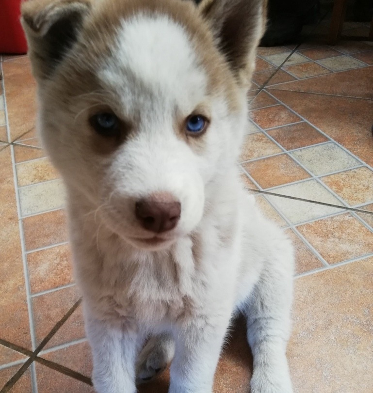

Jack el Pastor Alemán
Nombre: Coco
Raza:Husky
Edad: 5 Meses
Sexo: Femenino
Descripcion: Una cachorro husky que es leal y obediente para su corta edad aun asi es un animal que le gusta regalonear y revolotear junto a las personas.
La cachorro no estaesterilizada
Numero de Chip: #003
Vuelve a la pagina de perritos
Vuelve a la pagina principal